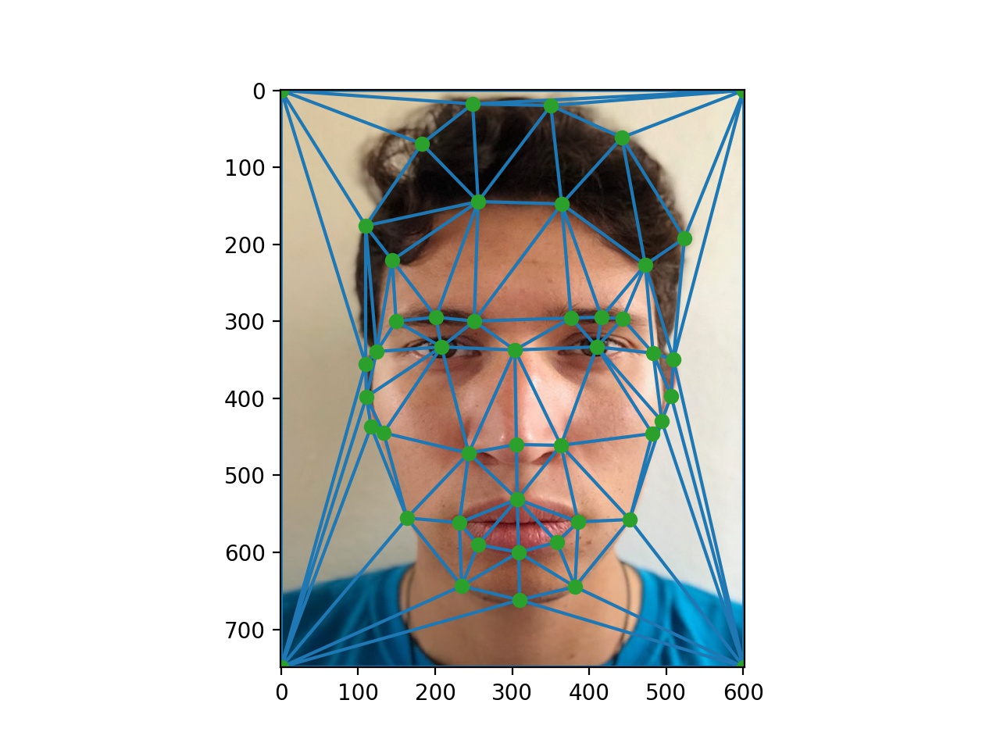

Overview
For our final project we take the paper "Style Transfer for Headshot Portraits" by Shih, Paris, Barnes, Freeman, and Durand, and implement it ourselves in Python3. A lot of the techniques used in the paper, such as Laplacian stacks, image warping, and matching, have been learned in this class and used previously, albeit slightly differently. We then take our best implementation of the paper and experiment with its results on our different lighting scenarios. Below, you can find our results in multiple different scenarios.
The goal of this project is to take two photos and transfer one headshot photo into the style of another headshot photo. To do this, we warp the stylized portrait into the shape of the other photo, compute the local energy maps, and transfer the local statistics of the portrait into the unstylized photo.
Dense Correspondences
The first step in our process is to compute dense correspondences. Previously, we manually annotated photos to have very exact correspondences, but in this approach, we first attempt to use automatic software. We attempted to use automatic face matching that can be found here. However, this matches only the part of the face below the forehead and within the ears, so this approach led to some problems, which will be displayed below. Since the triangulations were not as exact as in manual correspondences, we resort to manual correspondences for our best results. From these triangulations, we compute affine transforms and warp one image into the shape of the other. Below is an example of our triangulations, which we use to warp one image into the shape of another.
Jose & George
 >
>
Transfer Local Contrast
To transfer the local contrast, we utilized Gaussian and Laplacian stacks. First, we decompose both images into Laplacian stacks, where each level is defined by the equation:
The input to our Gaussian is sigma, and the x is a convolution operator.
We also extract the residual given a stack depth n, defined as
From there, we compute the local energy as follows:
We then warp every level of our portrait energy stack to the shape of our input image, through the triangulation defined in the above section.
At this point, we have energy stacks for both of our images, one for the original image, and one for the portrait warped into the shape of the original. To transfer the energy over, we compute our output as follows, where O is our output image and S_tilde is our warped example portrait, and epsilon is a small number to avoid division by 0:
The square root compensates for the square used to define for the energy.
We also clamp the gain at a maximum of 2.8 and a minimum of .9 to have robust gain maps. Our stacks span 6 levels. To get our final output image, we warp our example residual into the shape of our original photo and sum up our stack with this warped residual image.
Below, we have the results for morphing Jose's face into the style of Clooney's. Here, we have original Jose, original George, and transferred Jose.


Deviations
While their implementation did not specify how they defined correspondences, we chose to do this by using manually selected points for reasons specified above. Using an automatic correspondence finder, we found that it did not match the face from above the forehead and outside the ears, so the warped face went beyond our original face, resulting in odd blurs. Below are the comparisons.

While their implementation also used masks for the respective faces, we found that not using masks gave us better results than using binary masks for faces. Below, we have our results with a binary face mask and without.